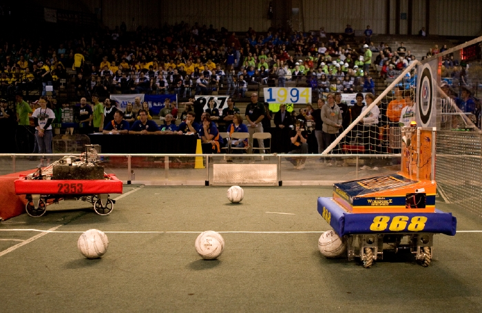
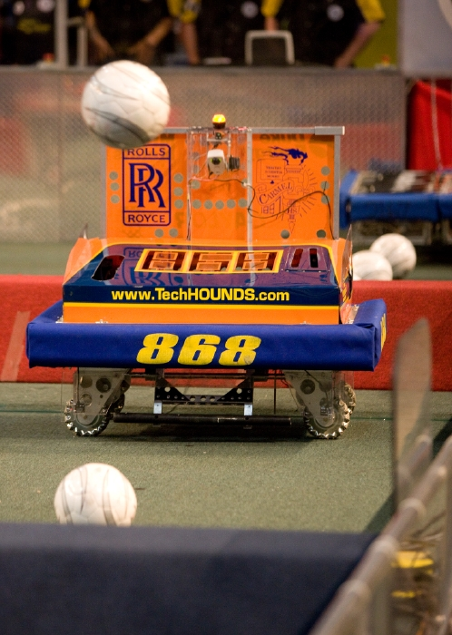
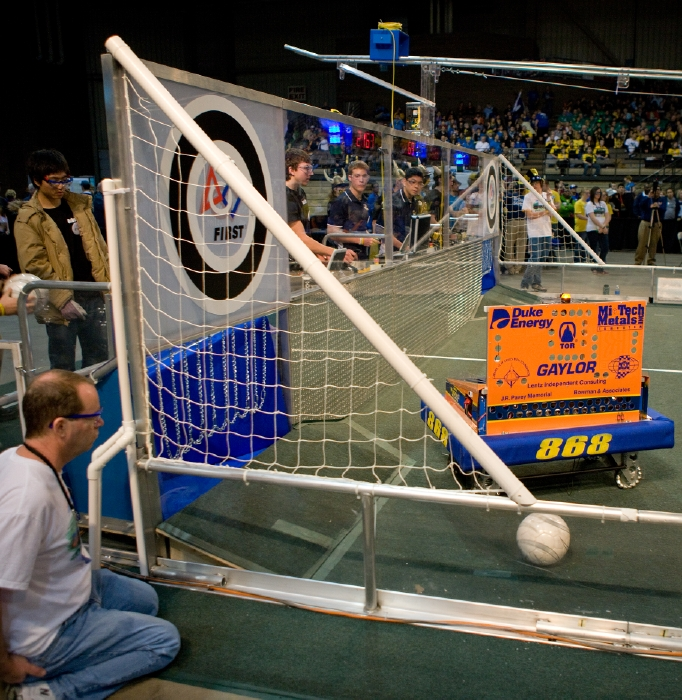

|
2010 Robot
Meet our 2010 robot through an overview, its specs, its award-winning features, and a video highlight reel.
|
 |
Overview The TechHOUNDS' have already proven to be a soccer ball "shooting machine" in the 2010 Competition, Breakaway. With an effective "flywheel kicker" that incorporates a spinning mass (see Issue 3.2 of our newsletter for how it works), our robot plays primarily in the midfield, shooting soccer balls over to the offensive zone and, whenever possible, scoring goals. In a field of about 60 teams at the Greater Kansas City Regional, this robot made it to the Top 8 alliances.
At the Boilermaker Regional, the TechHOUNDS were once again crowned the Boilermaker Regional Champions!
|
Specs
Mecanum Drive with 1 CIM motor on each wheel and Andy Mark Toughbox Gearboxes with custom gear ratios
Can kick soccer balls over all zones
Can effectively score from midfield
Can kick during autonomous mode
Rate of 1 kick every three seconds
|
 |
|
 |
Awards
Greater Kansas City Regional: Rockwell Automation Innovation in Control Award
Boilermaker Regional Xerox Creativity Award
Boilermaker Regional Winner
Award-winning features on this year's robot include our spinning mass/flywheel kicker module and the driving programming, where we use a gyro to always keep our robot oriented in a certain direction with respect to the field. This provides for ease of driving, especially in this fast-paced game.
|
|